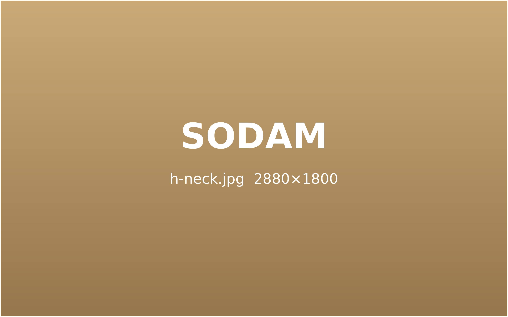
오래된 목 통증,
구조부터 바로잡습니다.
목은 머리 무게를 하루 종일 받치는 부위입니다. 작은 틀어짐이 쌓이면 어깨와 팔까지 불편이 번집니다.
통증의 원인을 먼저 확인하고, 바른 정렬로 돌아가도록 돕습니다.
단순한 뭉침이
아닐 수 있습니다.
목 통증은 흔하지만 원인은 저마다 다릅니다. 오래 두면 두통 · 어지럼 · 팔 저림으로 번지기도 합니다.
고개가 앞으로 빠진 자세가 굳으면서 목과 어깨 근육이 늘 긴장한 상태가 됩니다.
목 · 어깨 결림긴장성 두통목뼈 사이 디스크가 밀려 나와 신경을 누르면 팔 저림과 손끝 감각 이상이 생길 수 있습니다.
팔 저림손끝 감각 저하근육 속 단단한 통증점이 생겨, 누르면 멀리 떨어진 곳까지 아픈 상태입니다.
눌렀을 때 퍼지는 통증만성 뻐근함목뼈 뒤쪽 작은 관절에 염증이 생겨 고개를 돌리거나 젖힐 때 통증이 생깁니다.
돌릴 때 통증아침 뻣뻣함
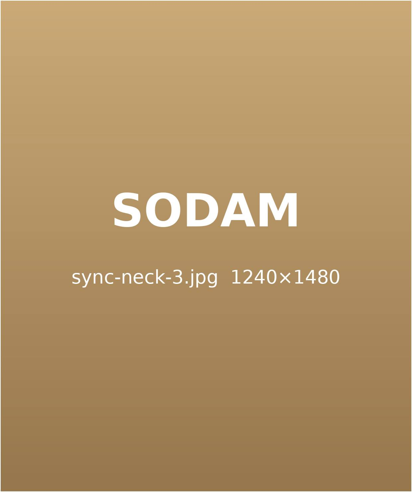
목 통증을 부르는 생활 속 원인
대부분은 자세 · 근육 · 순환 · 습관이 겹쳐 나타납니다. 원인을 나눠 보면 치료 순서가 보입니다.
스마트폰 · 노트북을 볼 때 고개가 숙여지면 목이 받는 무게가 몇 배로 늘어납니다.
오래 숙이는 자세
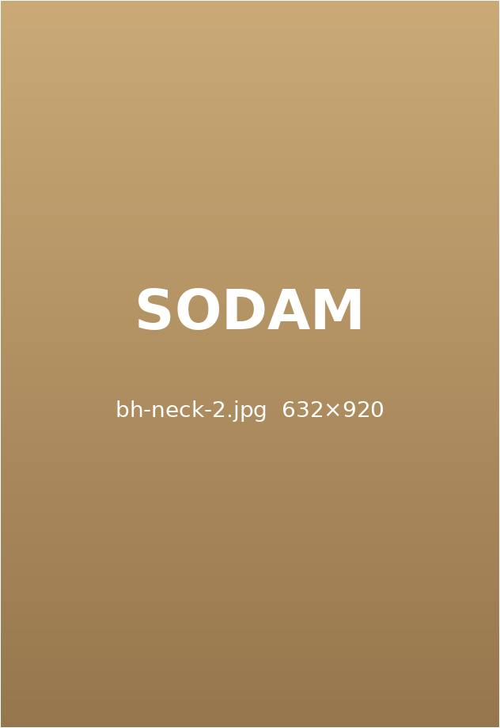
너무 높거나 낮은 베개는 잠자는 동안에도 목의 곡선을 무너뜨립니다.
맞지 않는 베개
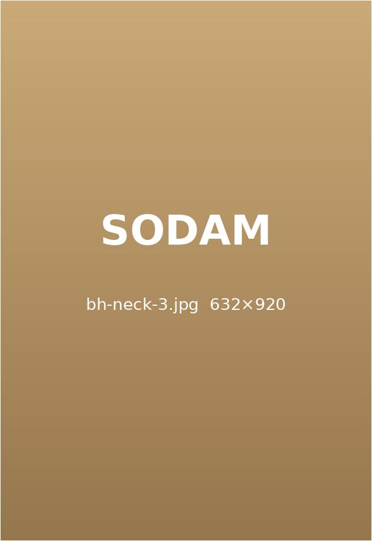
긴장이 이어지면 어깨가 올라가고 목 주변 근육이 쉬지 못합니다.
스트레스 · 긴장
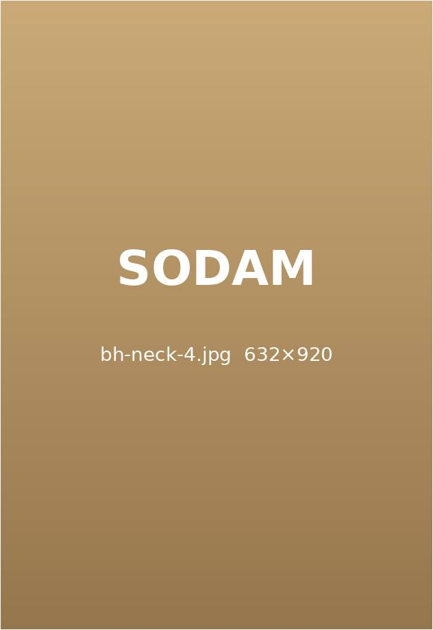
움직임이 적으면 목 주변 혈류가 줄어 뻐근함과 통증이 오래 남습니다.
순환 저하
목 통증 치료, 이렇게 진행합니다
같은 통증이라도 원인이 다르면 치료의 조합도 달라집니다. 검사 결과를 바탕으로 필요한 치료만 골라 구성합니다.
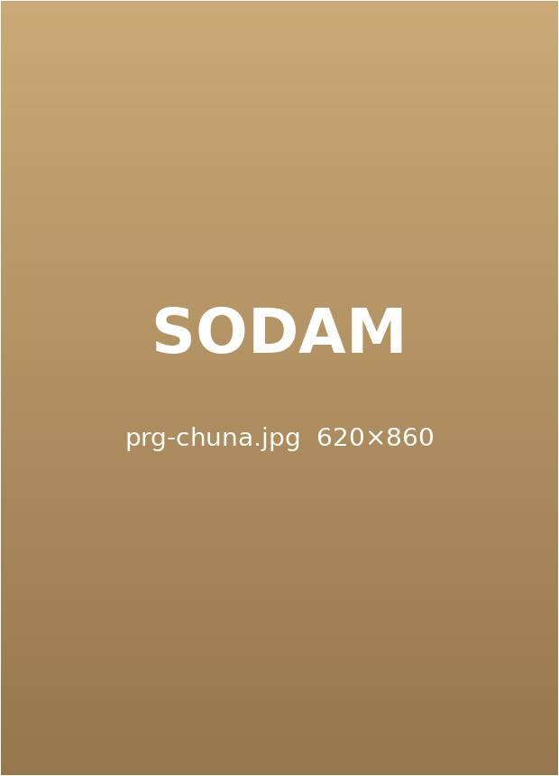
틀어진 관절과 척추 정렬을 손으로 조정해 신경과 근육에 걸린 부담을 덜어 줍니다.
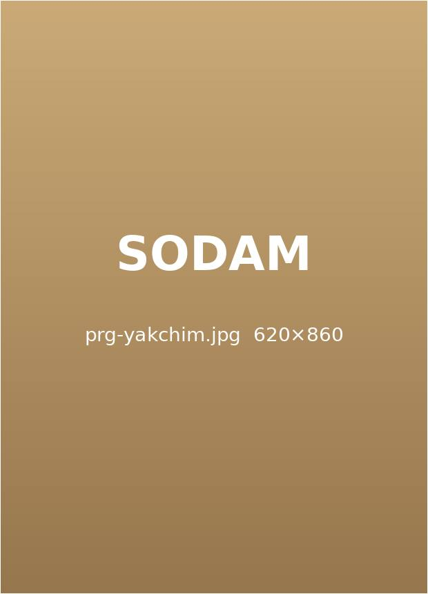
한약에서 추린 약액을 통증 부위 경혈에 넣어 염증을 가라앉히고 회복을 돕습니다.
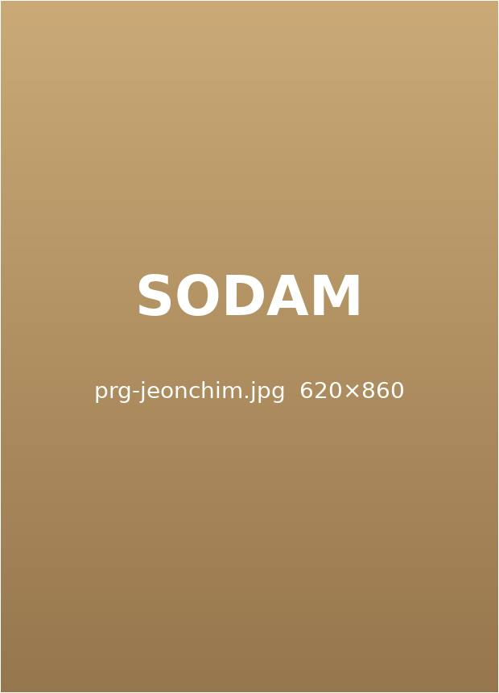
침에 약한 전류를 흘려 굳은 근육을 풀고 통증 신호를 줄입니다.
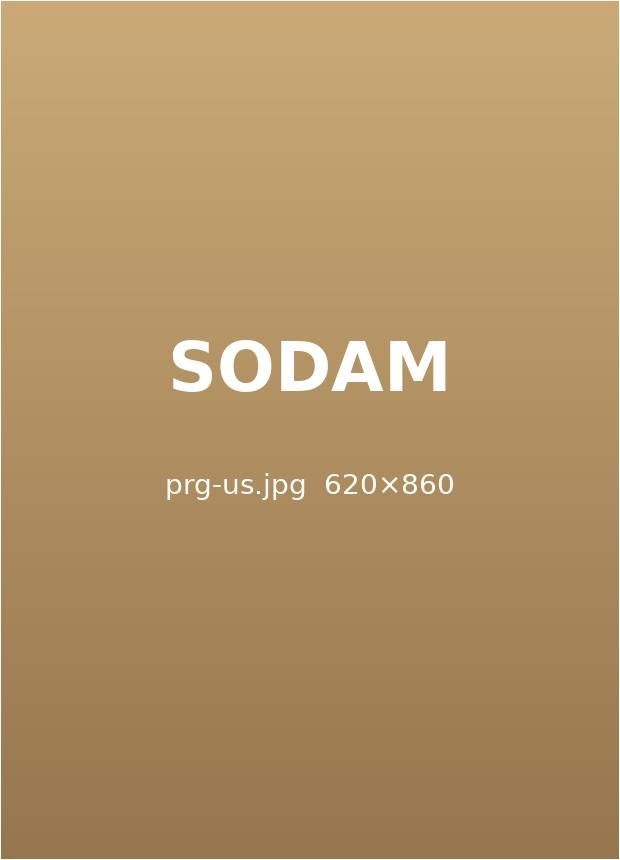
초음파 화면으로 병변 위치를 보면서 약침을 정확한 깊이에 놓습니다.
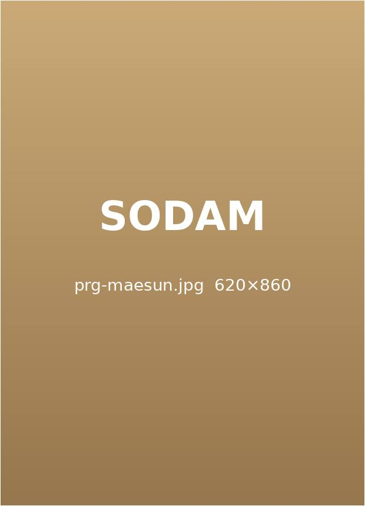
녹는 실을 근육층에 넣어 오래 자극을 이어 가며 약해진 조직을 지지합니다.
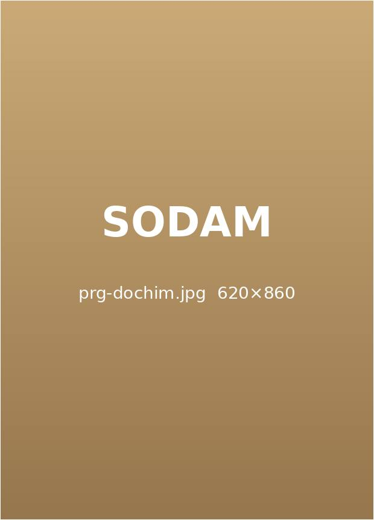
유착된 근막과 힘줄 주변을 가는 도침으로 풀어 움직임을 되찾도록 돕습니다.
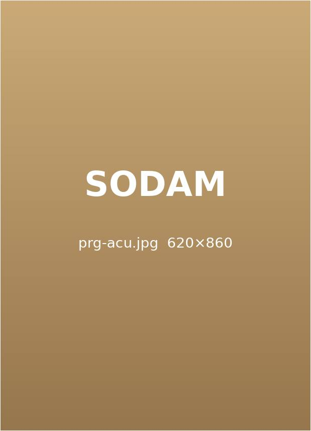
경혈 자극으로 기혈 순환을 돕고 통증과 긴장을 함께 줄입니다.
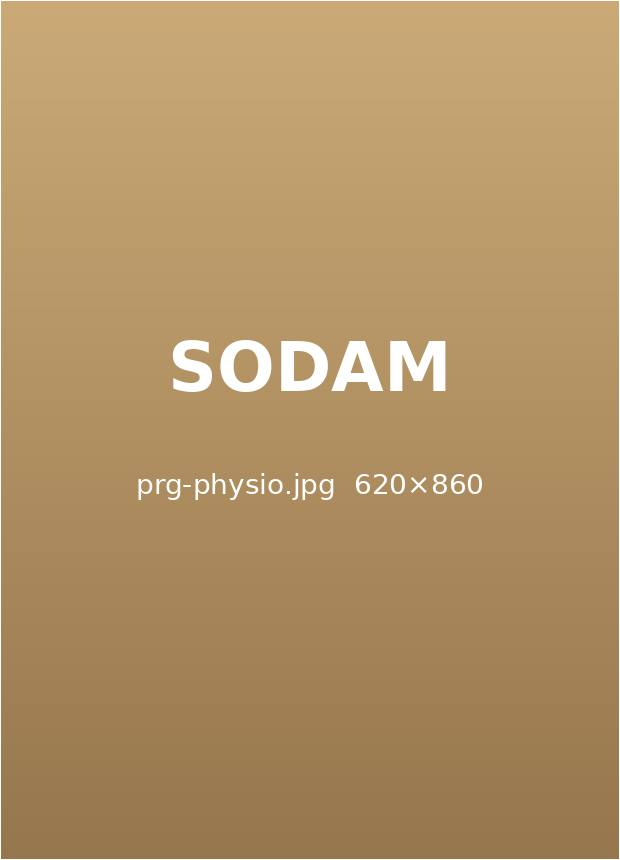
온열 · 견인 · 간섭파 등 상태에 맞는 물리 치료로 회복 속도를 높입니다.
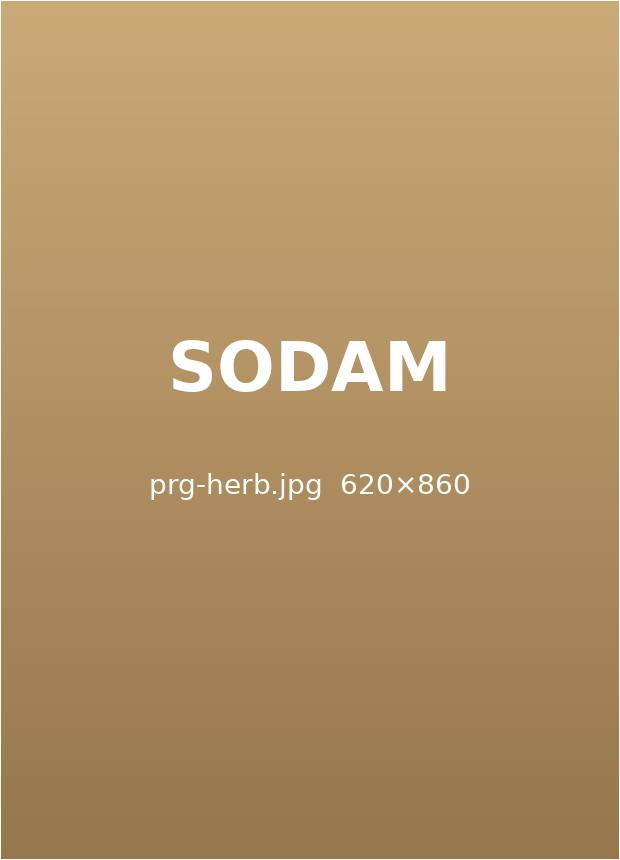
염증과 순환, 회복력을 함께 살펴 체질에 맞는 한약을 처방합니다.
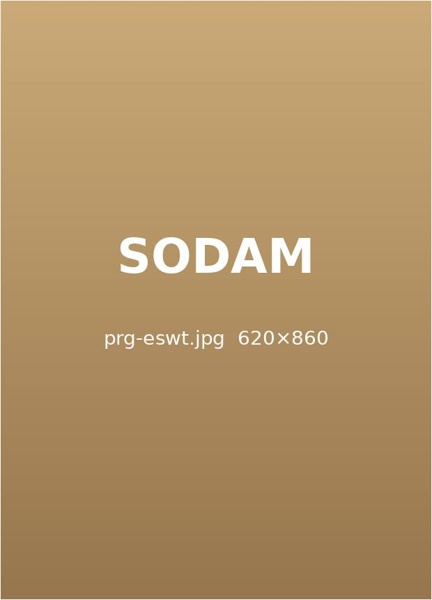
충격파로 굳은 힘줄과 석회를 자극해 만성 통증 부위의 재생을 돕습니다.
정확한 진단이
치료의 방향을 정합니다.
한의학적 종합 진단
맥진 · 설진 · 문진으로 기혈의 흐름과 장부 상태를 살핍니다.
체질과 생활 습관까지 함께 보고 치료 방향을 잡습니다.
STEP 1.
정밀 검사
초음파 · 체형 분석 · 자율신경 검사로 통증 부위를 여러 방향에서 확인합니다.
필요하면 영상의학과 검사를 연계해 판독합니다.
STEP 2.
맞춤 치료 · 재발 관리
검사 결과에 맞춰 치료를 조합하고, 회복 단계마다 다시 평가합니다.
통증이 줄어든 뒤에는 자세 · 운동 습관까지 함께 관리합니다.
STEP 3.
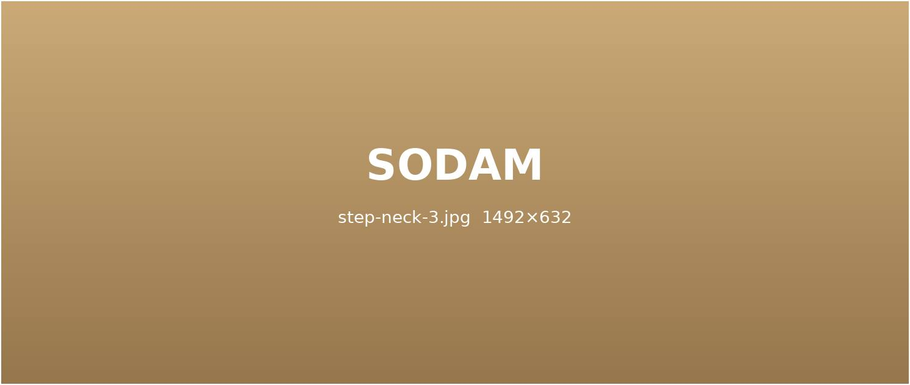